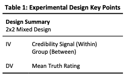
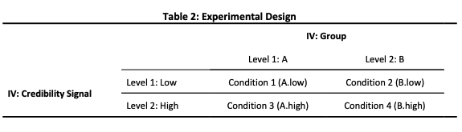
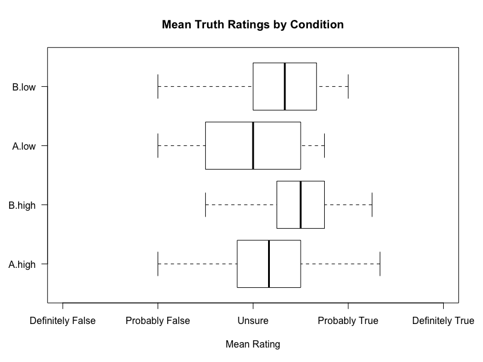
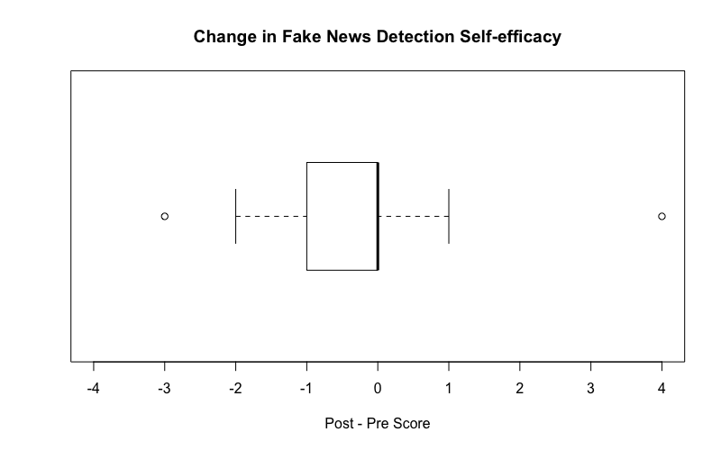
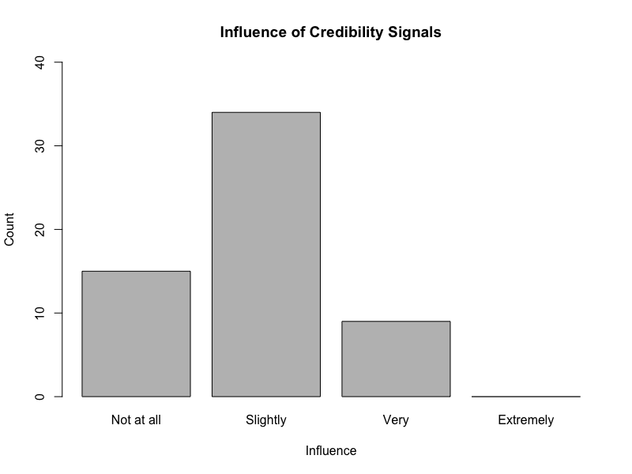
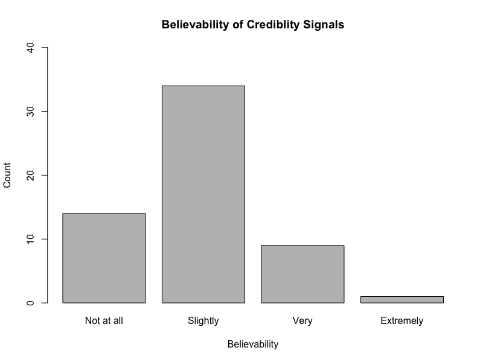

Case Study: Fake News
Introduction
University team research project investigating interaction with tools for Fake News detection.
The project involved reviewing the existing literature and then: designing, running, evaluating and reporting an experiment.
The project started with being assigned to a 4 person team and given the topic of Fake News to research.
I contributed significantly to most parts of the project described in this case study. I declare, when describing, the few parts of the project I did not contribute significantly to.
Tags: research, literature review, mixed-methods study, data analysis, statistical testing.
Process
For this case study, the project shall be viewed as a sequence of 4 stages: literature review, experiment, results and discussion. Each stage shall be discussed in turn.
Literature Review
Introduction
First, the existing literature was carefully reviewed. This involved: trawling the recent proceedings of reputable conferences, searching key terms, and following up the references of relevant publications. In the existing literature, the review aimed to identify:
- the research questions considered,
- the methods used,
- and the results found.
The goal was to find a gap in the existing research with motivation to research it. Additionally, an understanding of the methods previously used would be used to inform the design of this study.
A current, open and interesting research area identified was: the design and use of tools to help users spot Fake News.
Motivation & Background
The literature review defined Fake News to be disinformation (intentionally false or misleading information) in the form of news. Fake News is considered harmful and people are highly susceptible to it due to multiple cognitive biases, thus, motivating the study of tools to help people spot it.
Gap
Existing work found that:
- People are bad at spotting Fake News
- People think they are good at detecting Fake News
- People were sceptical of tools to help them detect Fake News
Existing work had not identified if, given tools to help them detect Fake News people would use the tools. This project attempts to fill some of this gap.
Context
The literature discussed how news consumption is changing with social media, eg. Facebook and Twitter, becoming an increasingly common way to consume news content. Consequently, news consumption through social media was deemed an appropriate setting for this research.
Resulting Research Questions
The literature review provided motivation to research the question: do credibility signals in social media news feeds affect users' perceptions of the truth of news?
Credibility signals are one form of tool for helping users spot Fake News. They present an estimated level of credibility such as low or high. They are a compromise between simpler tools like flags and more complex visualisations.
A second research question identified was: does the task of detecting Fake News affect peoples' perceptions of how good they are at it?
Experiment
To investigate the research questions:
- Do credibility signals in social media news feeds affect users' perceptions of the truth of news?
- Does the task of detecting Fake News affect peoples' perceptions of how good they are at it?
a mixed methods study was designed. The primary method was a rating exercise. It was complemented by questionnaires.
Rating Exercise
The primary method was a rating exercise. Participants were presented with a sequence of news articles and asked to rate how true they believed each article to be. The articles were designed to appear similarly to how they would be presented in a newsfeed.
The truth ratings were captured ussing a A 5-point Likert item with the values: values: ‘definitely false’, ‘probably false’, ‘unsure’, ‘probably true’, and ‘definitely true’. The mean truth ratings given by participants for sequences of articles was the dependent variable (DV) of the study.
Example Articles
Every article was presented with a credibility signal of either low or high value. The levels of the credibility signal formed one independent variable (IV) of the study.
Effects of showing certain articles with certain signals were counterbalanced by partitioning the participant into two groups such that for each article, the groups saw it with different signals. The group partition formed the second independent variable (IV) of the study.
This resulted in a 2x2 mixed design, thus, four conditions as summarised by Tables 1 & 2.
 Questionnaires
The rating exercise was complemented by pre- and post-questionnaires. The questionnaires had a few different purposes.
First the questionnaires were used to collect socio-demographic information to enable an understanding of who participated in the study. This understanding is important for evaluating the validity of the study.
Second, the questionnaires gathered information relating to potential confounds . The potential confounds include:
- the social media the participants used
- their familiarity with the articles presented in the rating exercise
Again this is important for assessing the studies validity.
The post-questionnaire explored why participants gave the truth ratings they did as well as how influenced they felt by the signals and how believable they thought the signals were. This information was gathered as it had the potential to help us explain the results we collected.
Finally, in both the pre- and post-questionnaire participants were asked how good they thought they were at detecting Fake News. This was asked, repeatedly, to identify if the rating exercise decreases self-efficacy.
Hypothesis
We believed that participants would be affected by the signals and hypothesised that: high credibility signals in social media news feeds will lead users to perceive the article as being more truthful . This hypothesis relates to the study's first research question.
The existing literature reported people to perceive themselves as being good at detecting Fake News but bad in reality. We suspected that the task of detecting Fake News may serve as a reality check, thus, hypothesised that: the task of rating how true news articles are will decrease peoples self efficacy at Fake News detection . This hypothesis relates to the study's second research question.
Running the study
The study was implemented using Qualtrics. First we piloted the study with a small number of participants to identify problems with the study and to modify it as necessary. The pilot indicated the study was longer than targeted so modifications were made to shorten it. 60 student participants were recruited by approaching them in communal areas of the university such as the library. I was not involved in participant recruitment.
At the start of every session with a participant they were briefed about the study and it was explained how their data would be used such that they could give informed consent. They were able to withdraw, without giving reason, during the experiment. At the end of the study they were debriefed and able to ask any questions.
Results
The experiment collected a large amount of data. The collected data could be downloaded from Qualtrics as a large spreadsheet. Using Python, largely the Pandas library, I processed the data to produce well formatted data files for each part of the analysis.
Using R, a team mate and I, explored each of the data sets using descriptive statistics and data visualisation. We used appropriate statistical tests to test the hypothesis.
Hypothesis 1
The first hypothesis was: high credibility signals in social media news feeds will lead users to perceive the article as being more truthful.
To test this hypothesis we wanted to compare the mean truth ratings of articles with low credibility and articles with high credibility. If the hypothesis is correct we would hope to to see a difference in location i.e. we would expect the mean of the high credibility level to be greater than the mean of the low credibility level.
Given the 2x2 mixed design of the experiment, the appropriate statistical test was a 2x2 mixed ANOVA. This ANOVA is an omnibus test that examines 3 possible effects.
The first effect is a main effect for the Credibility Signal IV. This is the effect changing the level of the Credibility Signal has on the Mean Truth Rating DV. The hypothesis predicts an effect for the Credibility Signal, however, the ANOVA showed there was not a statistically significant one. F(1,56)=2.726, p=.104, η2=.046. This can be seen visually from the boxplot above - the high signal conditions (A.high & B.high) were not rated notably more true then the low signal conditions (A.low & B.low).
The second effect is a main effect for the Group IV. This is the effect of changing the Group IV on the Truth Rating DV. No effect is expected here. Surprisingly, the ANOVA reported a significant and large effect. F(1,56)=8.520, p=.005, partial η2=.132 This indicates that Group B thought the articles were more likely true than Group A.
The final effect was the interaction effect. This effect that the combination of the Credibility Signal IV and the Group IV has on the DV. We expect the IVs to be independent, hence, we do not expect there to be an effect. As expected, the ANOVA did not find a significant interaction effect. F(1,56)=0.041, p=.839, η2=.001
In summary, the experiment did not find the result hypothesised. The hypothesised result was that articles with high credibility signals would be perceived as more truthful than articles with low credibility signals. Therefore, this experiment provides evidence against the hypothesis. Additionally, the experiment found the unexpected result that the Group IV affects perceived truth in a statistically significant way. The unexpected result shall be discussed in the discussion section of this case study.
Hypothesis 2
Hypothesis 2 was: the task of rating how true news articles are will decrease peoples self-efficacy at Fake News detection
Repeat measures of participants’ self-efficacy at Fake News detection were taken. The first measure was before the rating exercise and the second after. A 5-point Likert item was used with the values: very bad, bad, average, good and very good. Change in self-efficacy was computed by deducting the first measure from the second per participant.
The boxplot below visually describes the set of self-efficacy changes recorded. It is clearly skewed to negative values showing a decrease in self-efficacy.
To test the hypothesis formally, a Wilcoxon signed-rank test was used. The test reported T(30) = 55, p<.001. This means that there was a statistically significant change in self-efficacy which supports the hypothesis.
Credibility Signal Influence
In the post-questionnaire participants were asked how influenced they thought they were by the credibility signals. The participants’ responses were collected using a 4 point Likert item. This was of interest as it is highly relevant to the study’s first research question. The first research question considered if people would be influenced by credibility signals and this questionnaire question asks if the participants felt they were.
It was found that almost three quarters of participants felt that they were at least slightly influenced by the credibility signals.
Crediblity Signal Believability
The existing literature had reported that people were sceptical of tools for helping them detect Fake News. Therefore, when considering if the signals affect people it is interesting to investigate if people considered the signals believable. People may be too sceptical of tools for Fake News detection to find any tool believable. Additionally, the design of the tool may affect its believability, hence, participants not being affected by the signals may be related to the believability of these specific signals.
In the post-questionnaire, participants were asked how believable they found the credibility signals and their response was collected using a 4 point Likert item.
The results looked very similar to those collected for the question that asked participants how influenced they thought they were by the signals. About three quarters of participants thought the signals were at least slightly believable.
Further Analysis
The post-questionnaire was used to collect data about why participants gave the truth ratings they did. For each article they had been shown during the rating exercise, they were shown the article again along with the rating they gavegave, and asked for the main reasons they gave that rating. The responses were collected using an open text field. The data collected was analysed using content analysis, however, I did not contribute substantially to the content analysis so shall not discuss it further.
Discussion
The study aimed to test two hypotheses..
The first hypothesis was that: high credibility signals in social media news feeds will lead users to perceive the article as being more truthful. This hypothesis was tested using the rating exercise component of the experiment. The experiment did not find a statistically significant effect of credibility signals on the perceived truth of articles. This fits with the existing literature that reported people didn't think they would use credibility signals because they consider themselves good at detecting Fake News and are dubious of tools to help them. The participants did not consider the signals used in this study to be very believable; this lack of believability could be a contributing factor.
The second hypothesis was that: the task of rating how true news articles are will decrease peoples self efficacy at Fake News detection. This hypothesis was tested by comparing peoples self-efficacy before and after the rating exercise. A statistically significant effect was found of the rating exercise of Fake News detection self-efficacy. Our interpretation of this was that the task acts as a reality check causing the participant to readjust their perception of their ability. Consequently, an exercise like the rating exercise used in the experiment has the potential to be used as a tool to train people against falling for Fake News.
Additionally, an unexpected statistically significant effect of the group the participant was in on how true they perceived articles to be was found. This result suggests that participants in one group perceived articles to be considerably more truthful than participants in the other group did. This result seems odd. We carefully examined the experiment design and data in search of a cause but did not conclude on one. The only notable difference between the groups was their gender ratios. One group had a female:male ratio of 3:4 and the other 1:2. It's possible there is a relationship between gender and how truthful news is perceived to be. It is also possible that this is simply a false positive. Of course it is also possible there was a problem we did not identify, however, we did examine the design thoroughly and consult our course instructors who are experienced researchers to minimise this possibility. Further work would be required to further our understanding of this result.